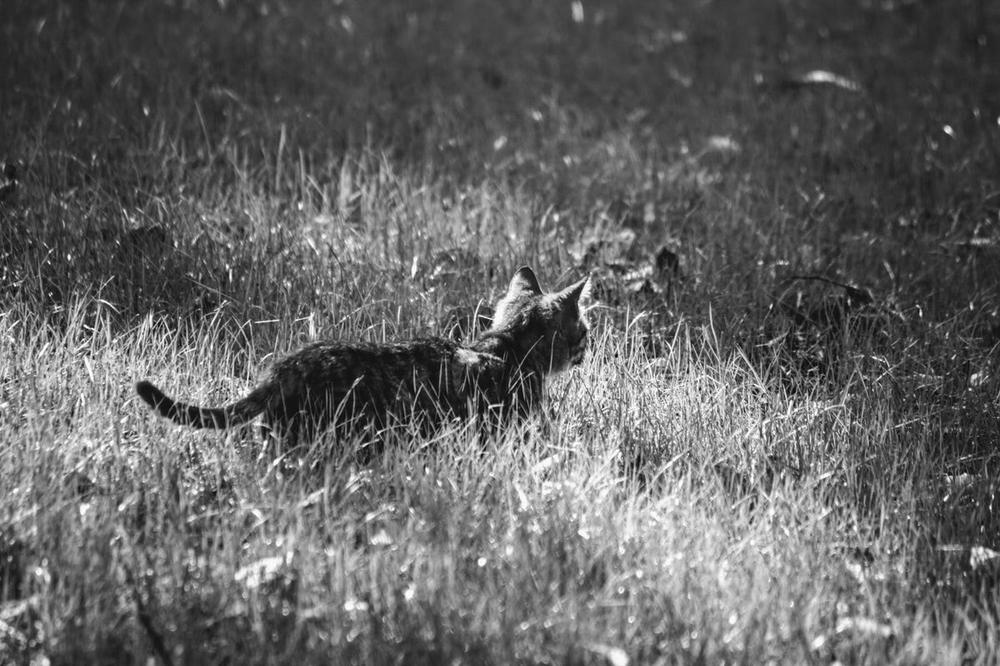

黑貓迷路中

故事給了就好，你別跟著我呀！
【連載｜故事柑仔店｜取語者黑貓】
〈黑貓迷路中〉
「右轉，欸不對，是左轉...」闔上指南針，黑貓重新拖起行李箱，拐了個彎，竄進舖著紅色地磚的窄巷。
輪子在磚上滾得飛快，一只深褐色繡花布包繫在箱口，隨著路面的縫隙顛簸，使勁地跳躍。
轉進拱形的騎樓，一群麻雀振翅飛出，外牆邊，一台藍色小貨車，慵懶地只掀起了半邊的車蓋，寫著鹽酥雞的壓克力板，歪歪斜斜地勾在上頭。蹲在車邊的中年男子，正奮力甩動手上的瀝水籃。
「唰唰唰。」
一片片青綠色的九層塔，隨著籃子的律動躍起、降落，盡情抖落身上的水花。水珠拋擲到空中，映出漸漸刷黃的天色。
黑貓悄悄掏了只圓瓶，一個側身，輕巧地接住水珠。湊近瓶口嗅了嗅，一股濃濃香澀味撲鼻而來，她連忙鎖緊瓶蓋，小心翼翼將瓶子投入行李箱，箱口的布包隱隱約約地挪動了下身子。
再往前頭是排磚造的矮樓，花窗上掛滿串串的辣椒，黑貓拉著箱子正要往左彎，迎面來了個婦人提著滿溢的菜籃，倉惶擦肩，一根細長豔紅的辣椒猛地跳出，飛身墜落在灰泥色的地板。
「啪。」摔出籽的紅辣椒，噴出最後一口氣，黑貓躍步上前，抽出另一只長瓶，穩穩地接住。深紅的氣體瞬間填滿瓶子，幽幽地翻騰。
天空的積雲也逐吋暈紅，黑貓理了理衣角繼續前行，熨得不見一處皺摺的襯衫，仍穩妥地紮在棉質的窄裙裡。
屋舍愈漸稀疏，腳下的道路不知何時已是碎石子路面，一時沙塵飛揚，輕拂過黑貓腳上的白球鞋。
「簌簌簌。」布包一陣騷動。長著雜草的空地中央，突然冒出一幢小屋。
「好了可以了。」黑貓拍了拍繡花布包，上頭綴著的紅色卍字結，不知何時鬆開了。
「妳不是比我早出發？」嘴裡還咬著吸管的男子倚在小屋門邊，從漁夫帽沿探頭看向她。
「哎呀，先別說這個了，快點，給你們看樣東西。」黑貓急匆匆拉了箱子進門，卻不忘撣掉鞋上的灰塵。
「黑貓妳來啦～欸，這包裡裝啥？」屋內迎來一個綁頭巾的女子，睭著黑貓手裡的繡花布包。
「上次那個魔神老人，我不拿他的月桃芯，結果這個卻出現在我箱子裡！」
幾個人湊近花布包口一瞧，一片粉白的月桃芯，正貼著瓶子，扭動著身軀，像哭又像笑。
歡迎來到語巫們的柑仔店 ，
每天日落的魔幻時刻，為你說一個故事。